Code
library(pacman)
p_load(bigmemory, bigstatsr)
p_load(ggplot2, magrittr, fda, pipeR, ggcorrplot, dplyr, tidyr,
sjlabelled)
p_load(knitr, knitrProgressBar, glmnet)
p_load(oro.nifti, neurobase, nortest, mgcv, ROCR)
p_load(sn, sp, e1071, FRK)This is the code for the paper “Smooth normative brain mapping of 3-dimensional morphometry imaging data using skew-normal regression” by Palma et al., available as a preprint on arxiv.
library(pacman)
p_load(bigmemory, bigstatsr)
p_load(ggplot2, magrittr, fda, pipeR, ggcorrplot, dplyr, tidyr,
sjlabelled)
p_load(knitr, knitrProgressBar, glmnet)
p_load(oro.nifti, neurobase, nortest, mgcv, ROCR)
p_load(sn, sp, e1071, FRK)source(here::here("slices_plot.R"))
theme_set(
theme_classic(base_size = 20)
)
'%ni%' <- Negate('%in%')
options(digits = 3)We import the mask file. Then, we take the MDT (minimal deformation template, the common template for the TBM images), we apply the mask on it and drop the empty dimensions of the array (i.e., those containing all zeros).
mask <- here::here("smoothed_mask_125.nii.gz") %>%
readNIfTI(fname = .)
fn = here::here("ADNI_ICBM9P_mni_4step_MDT.img")
dimscan <- c(220,220,220)
img_template <- array(readBin(fn, what = "int", n = prod(dimscan),
size = 2, signed = FALSE),
dim = dimscan)
template_resized <- mask_img(img_template, mask, allow.NA = TRUE) %>%
dropEmptyImageDimensions(., value = 0, threshold = 0, reorient = FALSE)
dims_mask <- dim(template_resized)
voxel_active <- which(as.vector(template_resized) != 0)
LVA <- length(voxel_active)The dimensions for the images are now 151, 189, 145 and the number of voxels within the mask is 2019941.
Now it is time to load the TBM images (we recommend to do it on a cluster): you can run the script import_masked_images.R to apply the mask on each image and return a vector with TBM values for the voxels within the mask. Alternatively, you can run the script project_TBM_fast.R to return the coefficients of a basis representation (e.g. B-splines) for each image. Please note: you need to specify the path to the mask and TBM images, and for the project_TBM_fast.R you need to provide as input a design matrix with the basis functions (which you can build using this function on my package neurofundata).
We will fit our models on a subset of the imaging dataset. First, we open the ADNIMERGE dataset and we select the 817 subjects for which we have the TBM images.
library("ADNIMERGE")
ADNI_Dx <- readxl::read_excel(here::here("ADNI1_subjects.xlsx"), sheet = 1)
data_ADNI <- dplyr::select(ADNIMERGE::adnimerge, "RID", "PTID", "VISCODE", "AGE", "PTGENDER", "MMSE", "ADAS13.bl") %>%
sjlabelled::remove_all_labels(.) ###,"PTEDUCAT", "PTETHCAT", "PTRACCAT")
data_ADNI_bl_817 <- tibble::as_tibble(filter(data_ADNI, VISCODE== "bl")) %>%
sjlabelled::remove_all_labels(.) %>%
inner_join(., ADNI_Dx) %>%
dplyr::select(-VISCODE)
data_ADNI_bl_817 <- sjlabelled::remove_all_labels(data_ADNI_bl_817)
data_ADNI_bl_817$PTGENDERMale <- with(data_ADNI_bl_817,
ifelse(PTGENDER == "Male", 1, 0)) %>%
as.factor(.)
data_ADNI_bl_817$Dx <- ordered(data_ADNI_bl_817$Dx, levels = c("N","MCI","AD"))
if(all.equal(sjlabelled::remove_all_labels(data_ADNI_bl_817$PTID), data_ADNI_bl_817$Subject)){
data_ADNI_bl_817 <- dplyr::select(data_ADNI_bl_817, -Subject)
} ### check that PTID and Subject are the same
normal_PTID <- sjlabelled::remove_all_labels(data_ADNI_bl_817$PTID[data_ADNI_bl_817$Dx == "N"])
MCI_PTID <- sjlabelled::remove_all_labels(data_ADNI_bl_817$PTID[data_ADNI_bl_817$Dx == "MCI"])
AD_PTID <- sjlabelled::remove_all_labels(data_ADNI_bl_817$PTID[data_ADNI_bl_817$Dx == "AD"])
data_ADNI_bl_817 %>%
group_by(Dx) %>%
summarise("Proportion of females" = mean(PTGENDERMale == 0, na.rm = T),
mean(AGE), IQR(AGE)) %>% kable()| Dx | Proportion of females | mean(AGE) | IQR(AGE) |
|---|---|---|---|
| N | 0.480 | 75.9 | 6.2 |
| MCI | 0.358 | 74.7 | 10.2 |
| AD | 0.473 | 75.3 | 10.6 |
ggplot(data = data_ADNI_bl_817,
aes(x = AGE, color = Dx)) +
stat_bin(geom="step",
direction="vh",
bins = 15,
position = "identity", linewidth = 1.2, alpha = 0.5, pad = TRUE
)+
theme_classic(base_size = 18) +
geom_hline(yintercept = 0, colour = "white", size = 1.5) +
expand_limits(y = 0) +
scale_y_continuous(expand = c(0, 0)) +
labs(x = "Age", y = "Count") +
scale_color_manual(name = "Diagnosis",
labels=c("CN","MCI","AD"),
values = c("#009E73", "gold3", "#D55E00"))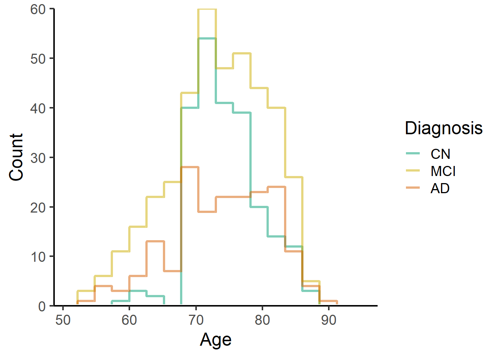
Being in a normative model setting, the training set (stratified by sex) will be made of cognitively normal (CN) individuals.
set.seed(589)
train_PTID <- data_ADNI_bl_817 %>%
group_by(Dx, PTGENDERMale) %>%
mutate(num_rows=n()) %>%
sample_frac(0.8, weight=num_rows) %>%
pull(PTID)
data_ADNI_bl_817$subs <- with(data_ADNI_bl_817,
ifelse(PTID %in% train_PTID,
"train", "test")) %>%
as.factor(.)
# ggplot(data_ADNI_bl_817, aes(AGE, color = Dx, lty = subs)) +
# geom_density() +
# scale_color_manual(name = "Diagnosis", values = c("darkblue", "gold3", "#D55E00"))+
# scale_linetype_manual(values=c("solid", "dotted"))
trainCN <- data_ADNI_bl_817 %>%
filter(subs == "train" & Dx == "N") %>%
pull(PTID)
testCN <- data_ADNI_bl_817 %>%
filter(subs == "test" & Dx == "N") %>%
pull(PTID)
trainCN_Male <- data_ADNI_bl_817 %>% filter(subs == "train" & Dx == "N" & PTGENDER == "Male") %>% pull(PTID)
filter(data_ADNI_bl_817, subs == "train" & Dx == "N") %>%
ggplot(aes(AGE, color=PTGENDER)) +
stat_bin(geom="step",
direction="vh",
bins = 15,
position = "identity", size = 1.2, alpha = 0.5, pad = TRUE
)+
#labs(x = "Prediction intervals width (years)", y = "Frequency", color = "Diagnosis") +
#scale_color_manual(name = "Diagnosis",values = rev(c("#009E73", "gold3", "#D55E00")), guide = guide_legend(reverse = TRUE, override.aes = list(alpha = 1, size = 0.9))) +
theme_classic(base_size = 18) +
geom_hline(yintercept = 0, colour = "white", size = 1.5) +
expand_limits(y = 0) +
scale_y_continuous(expand = c(0, 0))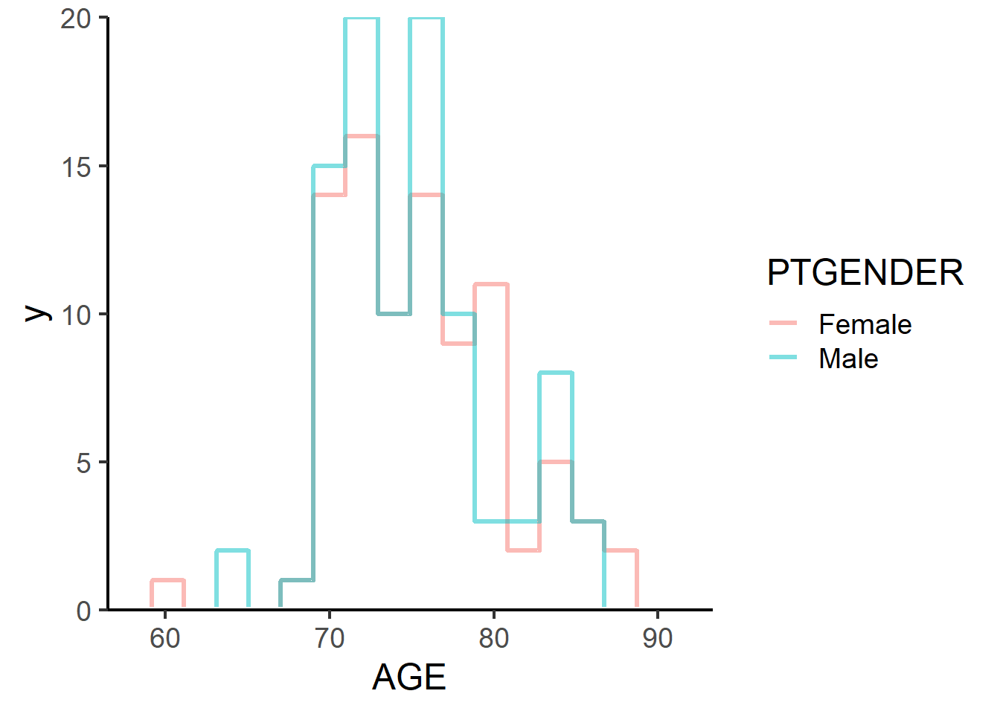
The training set is made of 183 individuals.
We build a regular grid of voxels within the 3D box containing the mask.
grid_dist <- 8
grid_list <- list(unique(c(seq(1, dims_mask[1], by = grid_dist), dims_mask[1])),
unique(c(seq(1, dims_mask[2], by = grid_dist), dims_mask[2])),
unique(c(seq(1, dims_mask[3], by = grid_dist), dims_mask[3])))
allgrid <- expand.grid(x = seq_len(dims_mask[1]),
y = seq_len(dims_mask[2]),
z = seq_len(dims_mask[3]),
KEEP.OUT.ATTRS = FALSE)
knot_loc <- which(allgrid$x %in% grid_list[[1]] &
allgrid$y %in% grid_list[[2]] &
allgrid$z %in% grid_list[[3]])
allgrid$knots <- 0
allgrid$knots[knot_loc] <- 1The spacing between consecutive knots is prespecified to be equal to 8 mm in each dimension.
We are now ready to perform the skew-normal modelling at the voxelwise level. In the diagramme below, (V) means that the content of the block applies to all \(V\) voxels in the mask, while (V*) refers to steps applied only on the \(V^*\) voxels in the grid.
First, we import the TBM vectors and we select the voxels in the grid for the subjects in the training set, as well as the corresponding covariates.
xdesc <- dget(here::here("tbm_data.desc"))
xdesc@description$dirname <- paste0(here::here(),"/")
tbm_data <- attach.big.matrix(xdesc)
data_PTID <- read.table(here::here("data_PTID.txt"), quote="\"", comment.char="")$V1 %>%
as.character()
tbm_data_FBM_knots <- big_copy(tbm_data,
ind.row = which(data_PTID %in% trainCN),
ind.col = which(voxel_active %in% knot_loc))
rownames(data_ADNI_bl_817) <- data_ADNI_bl_817$PTID
data_ADNI_bl_817 <- data_ADNI_bl_817[data_PTID, ]
rownames(data_ADNI_bl_817) <- data_ADNI_bl_817$PTID
ADNI_covariates <- data_ADNI_bl_817[data_PTID[which(data_PTID %in% trainCN)],] %>%
mutate(AGEminus70 = AGE - 70
,PTGENDER = as.factor(PTGENDER)
) %>%
dplyr::select(AGEminus70, PTGENDER) The knots within the mask are 3949.
At those voxels, we fit the skew-normal regression using age and gender (and their interaction) as covariates. Please note: the code below fits sequentially a skew-normal regression model for each voxel on the grid, therefore it will take a few minutes. The output of the regressions is a set of three parameters (location, scale, skewness) in CP (centered parameterisation, see SN package) at each knot on the grid.
fit2 <- function(col1, data = ADNI_covariates){
# update_progress(pb)
model.matrix(~ AGEminus70*PTGENDER, data = data) %>% ####ADD interaction
sn.mple(x = .,
y = col1,
opt.method="nlminb", penalty=NULL) %>%
magrittr::extract2("cp")
}
#options(kpb.suppress_noninteractive = TRUE)
#pb <- progress_estimated(ncol(tbm_data_FBM_knots))
fitskew_time <- system.time(
params_gridmat <- apply(tbm_data_FBM_knots[], 2, fit2) %>%
t(.) %>%
data.frame()
)
allgrid_CN <- data.frame(allgrid,
mask = as.vector(template_resized))
n1 <- ncol(allgrid_CN)
allgrid_CN[with(allgrid_CN, knots*mask>0),n1 + 1:(ncol(params_gridmat))] <- params_gridmat
#save(allgrid_CN, data_ADNI_bl_817, voxel_active, file = "CN_allgrid_agesex.RData")We selected two voxels which show respectively the lowest and the highest sample standard deviation (see file RawData.Rmd for additional exploratory analysis)
voxel_index <- c(719623, 1084768)
tbm_data_FBM_exploratory <- big_copy(tbm_data,
ind.col = voxel_index)
grid_all <- expand.grid(x = 1:dims_mask[1], y = 1:dims_mask[2], z = 1:dims_mask[3],
KEEP.OUT.ATTRS = FALSE)
location <- voxel_active[voxel_index] %>%
grid_all[., ]
voxel_demo <- ADNI_Dx %>%
arrange(Subject) %>%
data.frame("Voxel" = tbm_data_FBM_exploratory[], .)
# names(voxel_demo)[1:ncol(tbm_data_FBM_exploratory[])] <- as.character(voxel_index)
i <- 1
orthographic(template_resized, y = NULL, xyz = as.numeric(location[i,])) 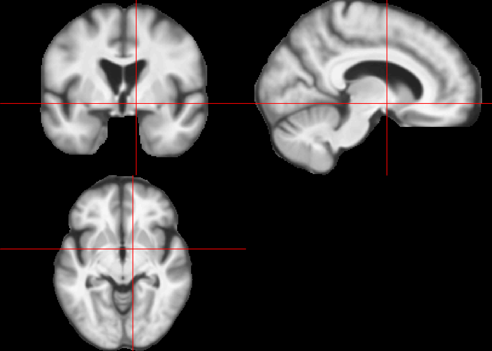
ggplot(data = voxel_demo, aes_string(x=paste0("Voxel.",i), color = "Dx")) +
geom_step(stat="ecdf") +
geom_vline(xintercept=1000, lty = 2) +
labs(x = paste("TBM at voxel", voxel_index[i]), y = "CDF")+ #,title = "ECDF for different Dx") +
scale_color_manual(name = "Diagnosis",
labels = c("AD", "MCI", "CN"),
values = rev(c("#009E73", "gold3", "#D55E00")),
guide = guide_legend(reverse = TRUE,
override.aes = list(alpha = 1, size = 0.9)))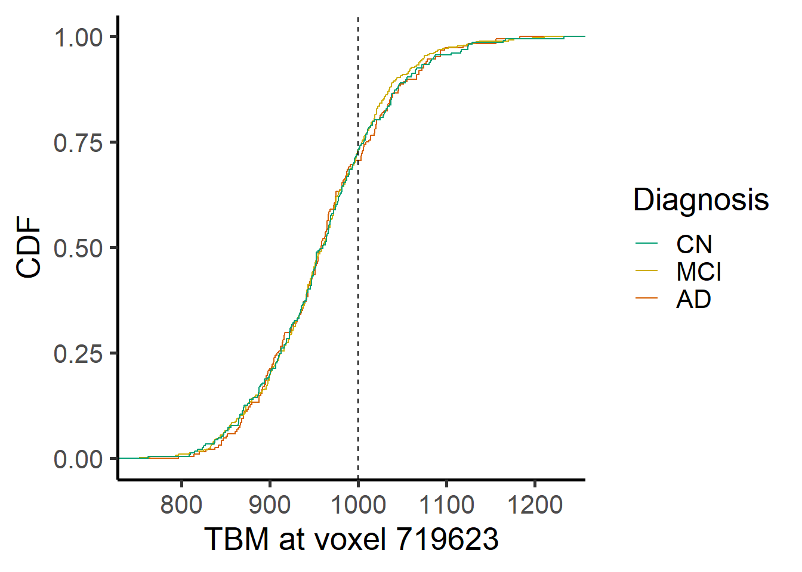
ggplot(data = voxel_demo, aes_string(x=paste0("Voxel.",i), color = "Dx")) +
stat_bin(geom="step",
direction="vh",
bins = 15,
position = "identity", linewidth = 1.2, alpha = 0.5, pad = TRUE
)+
theme_classic(base_size = 18) +
geom_vline(xintercept=1000, lty = 2) +
geom_hline(yintercept = 0, colour = "white", size = 1.5) +
expand_limits(y = 0) +
scale_y_continuous(expand = c(0, 0)) +
labs(x = paste("TBM at voxel", voxel_index[i]), y = "Count")+ #,title = "ECDF for different Dx") +
scale_color_manual(name = "Diagnosis",
labels = c("AD", "MCI", "CN"),
values = rev(c("#009E73", "gold3", "#D55E00")),
guide = guide_legend(reverse = TRUE,
override.aes = list(alpha = 1, size = 0.9)))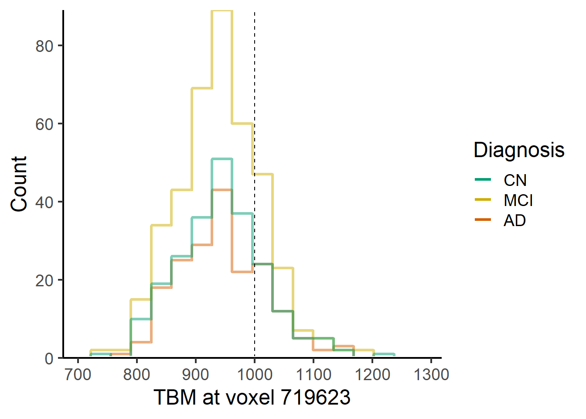
ggplot(data = voxel_demo, aes_string(x=paste0("Voxel.",i), color = "Dx")) +
geom_density() +
geom_vline(xintercept=1000, lty = 2) +
scale_y_continuous(expand = c(0, 0)) +
scale_color_manual(name = "Diagnosis",
labels = c("AD", "MCI", "CN"),
values = rev(c("#009E73", "gold3", "#D55E00")),
guide = guide_legend(reverse = TRUE,
override.aes = list(alpha = 1, size = 0.9)))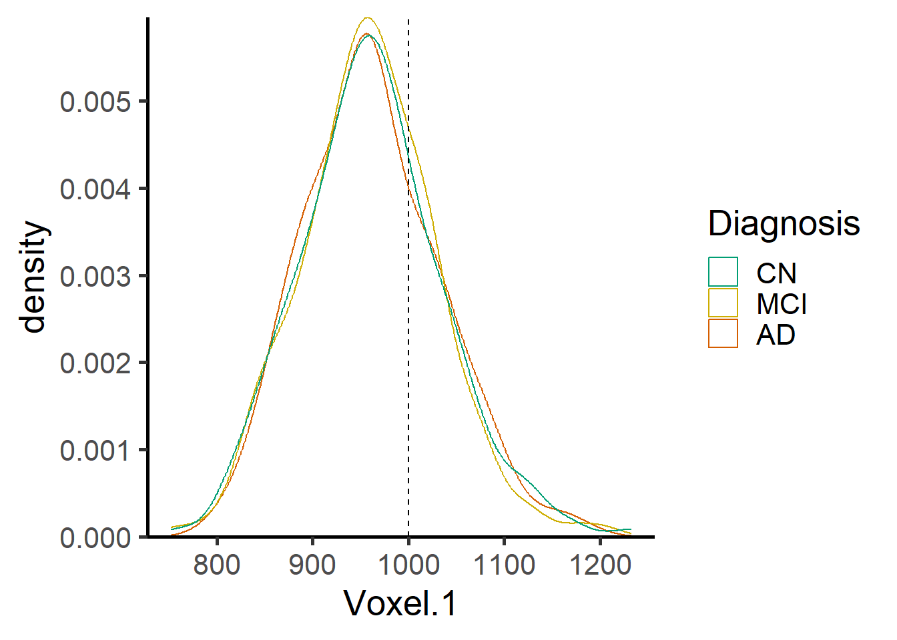
i <- 2
orthographic(template_resized, y = NULL, xyz = as.numeric(location[i,])) 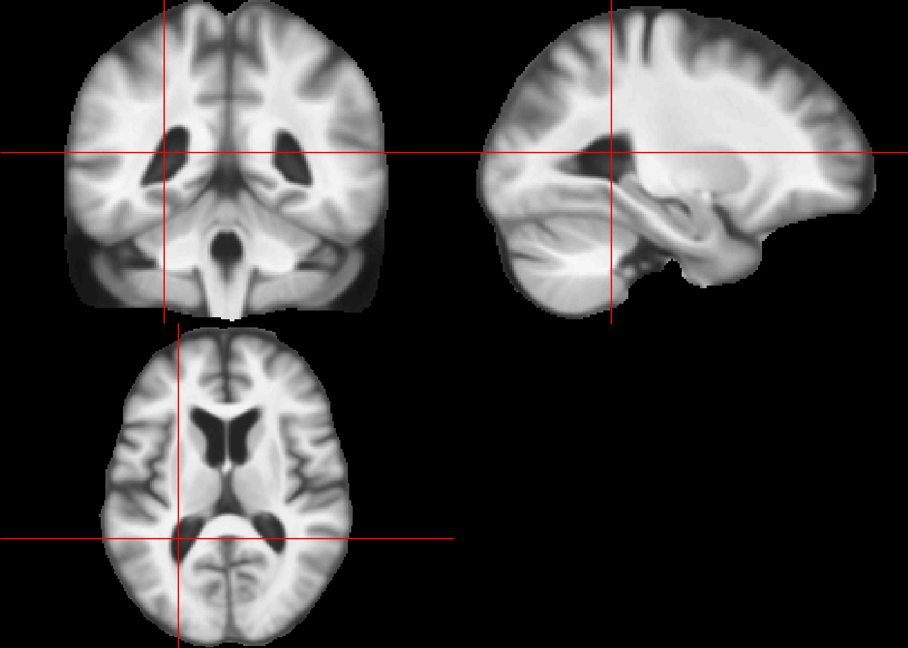
ggplot(data = voxel_demo, aes_string(x=paste0("Voxel.",i), color = "Dx")) +
geom_step(stat="ecdf") +
geom_vline(xintercept=1000, lty = 2) +
labs(x = paste("TBM at voxel", voxel_index[i]), y = "CDF")+ #,title = "ECDF for different Dx") +
scale_color_manual(name = "Diagnosis",
labels = c("AD", "MCI", "CN"),
values = rev(c("#009E73", "gold3", "#D55E00")),
guide = guide_legend(reverse = TRUE,
override.aes = list(alpha = 1, size = 0.9)))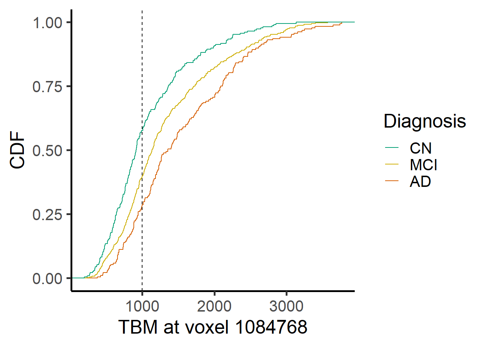
ggplot(data = voxel_demo, aes_string(x=paste0("Voxel.",i), color = "Dx")) +
stat_bin(geom="step",
direction="vh",
bins = 15,
position = "identity", linewidth = 1.2, alpha = 0.5, pad = TRUE
)+
theme_classic(base_size = 18) +
geom_vline(xintercept=1000, lty = 2) +
geom_hline(yintercept = 0, colour = "white", size = 1.5) +
expand_limits(y = 0) +
scale_y_continuous(expand = c(0, 0)) +
labs(x = paste("TBM at voxel", voxel_index[i]), y = "Count")+ #,title = "ECDF for different Dx") +
scale_color_manual(name = "Diagnosis",
labels = c("AD", "MCI", "CN"),
values = rev(c("#009E73", "gold3", "#D55E00")),
guide = guide_legend(reverse = TRUE,
override.aes = list(alpha = 1, size = 0.9)))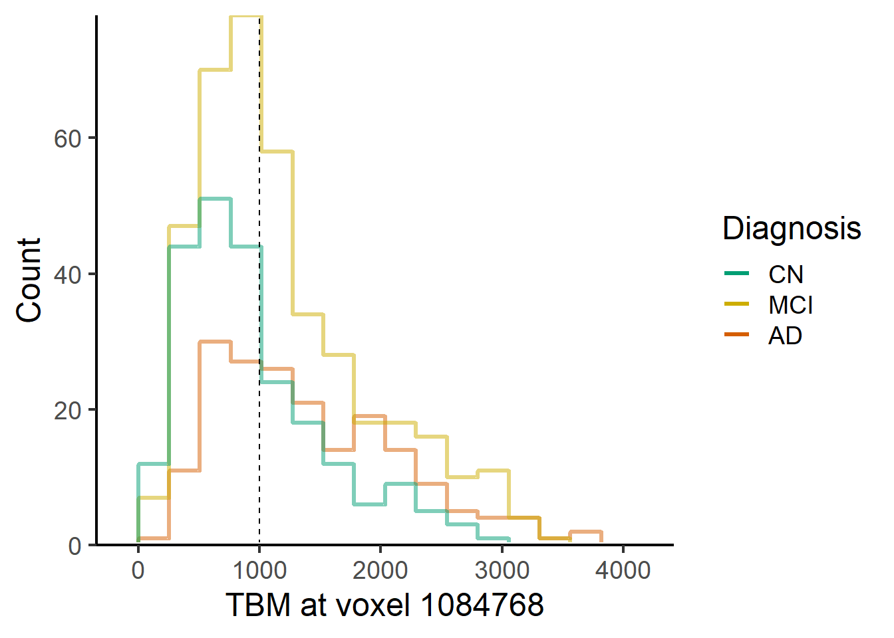
ggplot(data = voxel_demo, aes_string(x=paste0("Voxel.",i), color = "Dx")) +
geom_density() +
geom_vline(xintercept=1000, lty = 2) +
scale_y_continuous(expand = c(0, 0)) +
scale_color_manual(name = "Diagnosis",
labels = c("AD", "MCI", "CN"),
values = rev(c("#009E73", "gold3", "#D55E00")),
guide = guide_legend(reverse = TRUE,
override.aes = list(alpha = 1, size = 0.9)))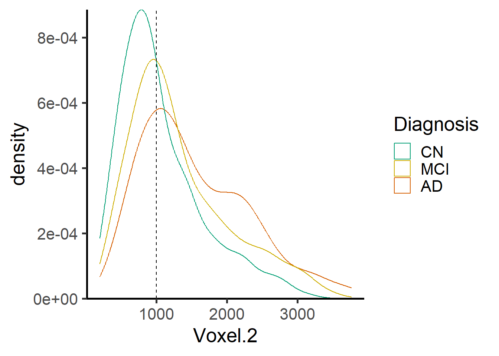
Now we fit the skew normal regression model for both voxels and show the corresponding normative plots.
vox1 <- voxel_demo %>%
filter(Subject %in% trainCN) %>%
pull(Voxel.2)
SNcoefs <- model.matrix(~ AGEminus70*PTGENDER, data = ADNI_covariates) %>%
sn.mple(x = .,
y = vox1,
opt.method="nlminb", penalty=NULL) %>%
magrittr::extract2("cp")
# m_lin <- lm(vox1 ~ AGEminus70*PTGENDER, data = ADNI_covariates)
m5 <- selm(vox1 ~ AGEminus70*PTGENDER, family="SN", data=ADNI_covariates)
x <- 70 + seq(range(ADNI_covariates$AGEminus70)[1], range(ADNI_covariates$AGEminus70)[2], by = 0.5)
CPmean_F <- SNcoefs["(Intercept.CP)"] + SNcoefs["AGEminus70"]*(x-70)
CPmean_M <- SNcoefs["(Intercept.CP)"] + SNcoefs["PTGENDERMale"] +
(SNcoefs["AGEminus70"] + SNcoefs["AGEminus70:PTGENDERMale"])*(x-70)
qtls <- c(0.1, 0.3, 0.5, 0.7, 0.9)
qsnmat_F <- matrix(NA, nrow = length(CPmean_F), ncol = length(qtls)) %>%
as.data.frame()
names(qsnmat_F) <- as.character(qtls)
for(i in 1:length(CPmean_F)){
qsnmat_F[i, ] <- qsn(qtls,
dp = cp2dp(c(CPmean_F[i], SNcoefs["s.d."], SNcoefs["gamma1"]), family = "SN")) #c(CPmean_F[i], coefficients(m5)["s.d."], coefficients(m5)["gamma1"]))
}
qsndat_F <- qsnmat_F %>%
cbind(., "AGEminus70" = x, PTGENDER = "Female") %>%
pivot_longer(cols = 1:length(qtls), names_to = "Quantile", values_to = "Value")
qsnmat_M <- matrix(NA, nrow = length(CPmean_M), ncol = length(qtls))%>%
as.data.frame()
names(qsnmat_M) <- as.character(qtls)
for(i in 1:length(CPmean_M)){
qsnmat_M[i, ] <- qsn(qtls,
dp = cp2dp(c(CPmean_M[i], coefficients(m5)["s.d."], coefficients(m5)["gamma1"]), family = "SN"))
}
qsndat_M <- qsnmat_M %>%
cbind(., "AGEminus70" = x , PTGENDER = "Male") %>%
pivot_longer(cols = 1:length(qtls), names_to = "Quantile", values_to = "Value")
ggplot(data = ADNI_covariates,
aes(x = 70 + AGEminus70, y = vox1, colour = PTGENDER)) +
geom_point(alpha = 0.5) +
geom_line(data = qsndat_F,
aes(x = AGEminus70, y = Value, group = factor(Quantile), colour = PTGENDER),
linetype = 2) +
geom_line(data = qsndat_M,
aes(x = AGEminus70, y = Value, group = factor(Quantile), colour = PTGENDER),
linetype = 2) +
scale_color_manual(name = "PTGENDER",
values = c("#F8766D","#00BFC4", "#F8766D","#00BFC4")) +
labs(x = "Age", y = paste("TBM at voxel", voxel_index[2]))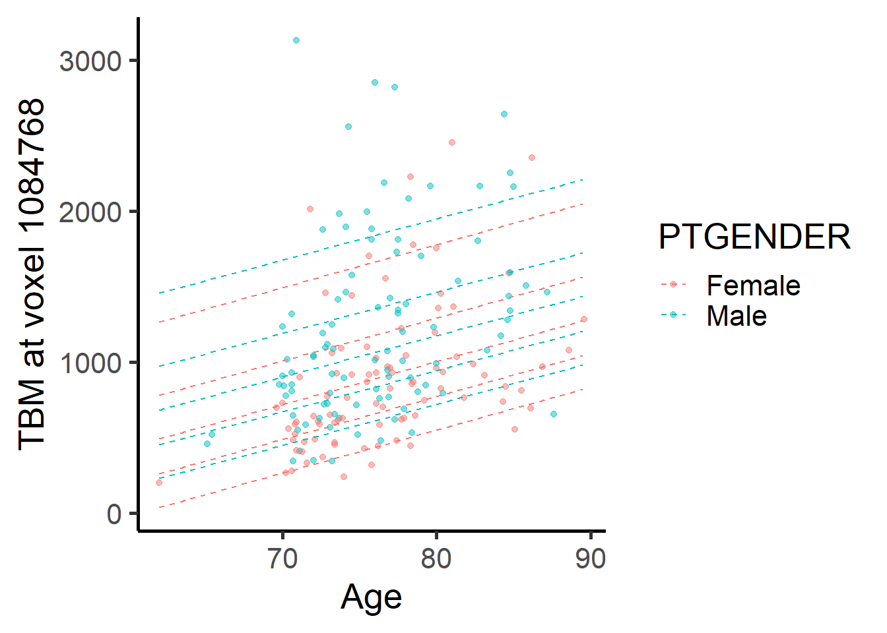
To obtain a 3D version of radial basis functions, we have built a 3D version of the plane function from the package FRK. Although the structure of the following function is very close to the corresponding function on the package, please reuse it with caution.
setClass("plane3D",contains="manifold")
plane3D <- function(measure=Euclid_dist(dim=3L)) {
stopifnot(dimensions(measure)==3L)
new("plane3D",measure=measure)
}
## Constructor for plane
measure <- function(dist,dim) {
## Basic checks
if(!is.function(dist))
stop("dist needs to be a function that accepts dim arguments")
if(!(is.numeric(dim) | is.integer(dim)))
stop("dim needs to be an integer, generally 1L, 2L or 3L")
dim = as.integer(dim) # coerce to integer if numeric
new("measure",dist=dist,dim=dim) # init. object
}
Euclid_dist <- function(dim=2L) {
## Euclidean distance
stopifnot(is.integer(dim)) # dimension needs to be integer
new("measure", # init. measure object with the distR function
dist=function(x1,x2) distR(x1,x2), dim=dim)
}
setMethod("initialize",signature="plane3D",
function(.Object,measure=Euclid_dist(dim=3L)) {
.Object@type <- "plane3D" # set type
.Object@measure <- measure # set measure
callNextMethod(.Object)})
.GRBF_wrapper <- function(manifold,mu,std) {
.check_basis_function_args(manifold,mu,std)
function(s) {
stopifnot(ncol(s) == dimensions(manifold)) # Internal checking
dist_sq <- distance(manifold,s,mu)^2
exp(-0.5* dist_sq/(std^2) )
}
}
.MQ_wrapper <- function(manifold,mu,std) {
.check_basis_function_args(manifold,mu,std)
function(s) {
stopifnot(ncol(s) == dimensions(manifold)) # Internal checking
dist_sq <- distance(manifold,s,mu)^2
1/sqrt(1 + (dist_sq*std)^2) ###(dist_sq^2 + std^2)^1.03
}
}
.check_basis_function_args <- function(manifold,loc,scale) {
if(!is.matrix(loc))
stop("Basis functions need to be evaluated using locations inside a matrix")
if(!(dimensions(manifold) == ncol(loc)))
stop("Incorrect number of columns for the argument loc")
if(!is.numeric(scale))
stop("The scale parmaeter needs to be numeric")
if(!(scale > 0))
stop("The scale parameter needs to be greater than zero")
}
local_basis <- function(manifold=sphere(), # default manifold is sphere
loc=matrix(c(1,0),nrow=1), # one centroid at (1,0)
scale=1, # std = 1, and Gaussian RBF
type=c("bisquare","Gaussian","exp","Matern32", "multiquadric")) {
## Basic checks
if(!is.matrix(loc)) stop("loc needs to be a matrix")
if(!(dimensions(manifold) == ncol(loc))) stop("number of columns in loc needs to be the
same as the number of manifold dimensions")
if(!(length(scale) == nrow(loc))) stop("need to have as many scale parameters as centroids")
type <- match.arg(type)
n <- nrow(loc) # n is the number of centroids
colnames(loc) <- c(outer("loc",1:ncol(loc), # label dimensions as loc1,loc2,...,locn
FUN = paste0))
fn <- pars <- list() # initialise lists of functions and parameters
for (i in 1:n) {
## Assign the functions as determined by user
if(type=="bisquare") {
fn[[i]] <- .bisquare_wrapper(manifold,matrix(loc[i,],nrow=1),scale[i])
} else if (type=="Gaussian") {
fn[[i]] <- .GRBF_wrapper(manifold,matrix(loc[i,],nrow=1),scale[i])
} else if (type=="exp") {
fn[[i]] <- .exp_wrapper(manifold,matrix(loc[i,],nrow=1),scale[i])
} else if (type=="Matern32") {
fn[[i]] <- .Matern32_wrapper(manifold,matrix(loc[i,],nrow=1),scale[i])
} else if (type=="multiquadric") {
fn[[i]] <- .MQ_wrapper(manifold,matrix(loc[i,],nrow=1),scale[i])
}
## Save the parameters to the parameter list (loc and scale)
pars[[i]] <- list(loc = matrix(loc[i,],nrow=1), scale=scale[i])
}
## Create a data frame which summarises info about the functions. Set resolution = 1
df <- data.frame(loc,scale,res=1)
## Create new basis function, using the manifold, n, functions, parameters list, and data frame.
this_basis <- Basis(manifold = manifold, n = n, fn = fn, pars = pars, df = df)
return(this_basis)
}Now we create the local basis functions centered at the knots of the grid which fall within the mask. The scale parameter is set to be smaller than the distance between adjacent knots. The design matrix with the radial basis functions is saved.
basis_locs <- data.frame(allgrid_CN) %>%
filter(mask*knots > 0) %>%
dplyr::select(x,y,z) %>%
as.matrix()
G <- local_basis(manifold = plane3D(),
loc=basis_locs,
scale=rep(grid_dist*2/3,
nrow(basis_locs)),
type="Gaussian")
coords<-filter(allgrid_CN, mask>0) %>%
dplyr::select(x,y,z) %>%
as.matrix(.)
fun1 <- function(xx, maxdist){
update_progress(pb)
ii <- FRK::distR(coords, matrix(xx, nrow = 1)) %>%
magrittr::is_less_than(maxdist) %>%
which(.)
ji <- which(apply(basis_locs, 1, function(x) identical(x, xx))) %>%
rep(., length(ii))
xi <- coords[ii, ] %>% ##row index of xx in basis_locs
G@fn[[unique(ji)]](.) %>%
as.vector(.)
return(list(i=ii, p = length(ii) , x = xi)) #j=ji
}
pb <- progress_estimated(nrow(basis_locs))
system.time(
radial_design_mat <- apply(basis_locs, 1, fun1, maxdist = grid_dist*2) %>>%
{sparseMatrix(x=unlist(lapply(.,"[[","x")),
i=unlist(lapply(.,"[[","i")),
p=c(0,cumsum(sapply(.,function(x){x$p}))),
dims=c(nrow(coords), length(.)),
index1=TRUE)}
)
save(radial_design_mat, file = paste0("RBF_", grid_dist, "mm.RData"))Then, we use glmnet to get an intercept, scale and skewness parameter for all the voxels outside the grid, thus covering the entire images. In other words, we are interpolating to obtain parameter functions across the rest of the brain images.
load(here::here("RBF_8mm.RData"))
ind2<- with(allgrid_CN, which(knots*mask > 0))
intercept_coefSN <- rep(NA, nrow(allgrid_CN))
mod1 <- allgrid_CN %>%
filter(., mask > 0) %>%
with(., which(knots == 1)) %>%
radial_design_mat[., ] %>%
glmnet::glmnet(.,
allgrid_CN$X.Intercept.CP.[ind2],
lambda = 0,
intercept = TRUE)
intercept_coefSN[voxel_active] <- cbind(1, radial_design_mat) %*% coef(mod1) %>%
as.vector()
slices_plot(intercept_coefSN[voxel_active], dims = dims_mask, voxels = voxel_active,
mask.under = template_resized>0, alpha = 1, col.threshold = 1000)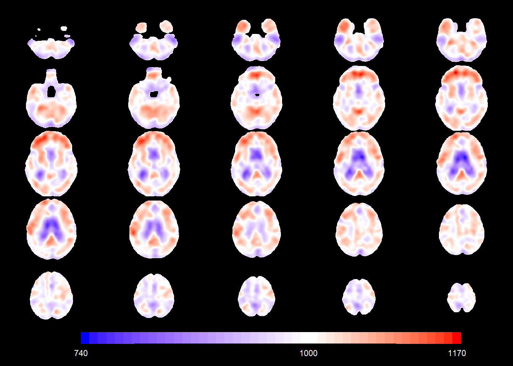
SD_coefSN <- NA
mod1 <- allgrid_CN %>%
filter(., mask > 0) %>%
with(., which(knots == 1)) %>%
radial_design_mat[., ] %>%
glmnet::glmnet(.,
allgrid_CN$s.d.[ind2],
lambda = 0,
intercept = TRUE)
SD_coefSN[voxel_active] <- cbind(1, radial_design_mat) %*% coef(mod1) %>%
# exp() %>%
as.vector()
slices_plot(SD_coefSN[voxel_active], dims = dims_mask, voxels = voxel_active,
mask.under = template_resized>0, alpha = 1, col.threshold = 150)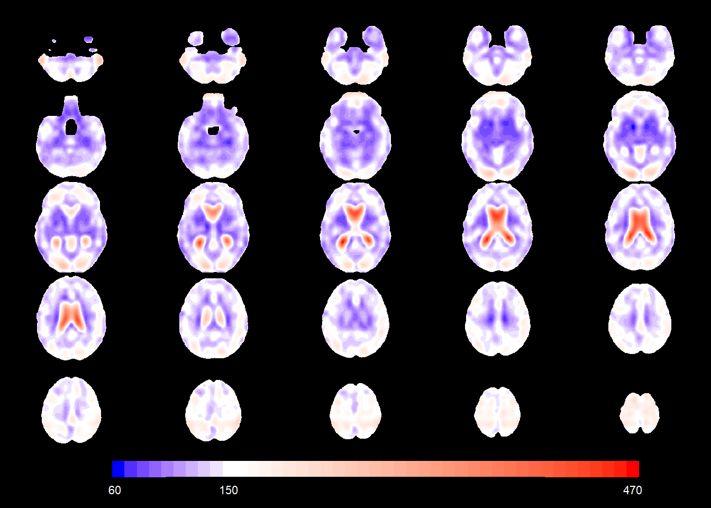
gamma1_radial <- NA
mod1 <- allgrid_CN %>%
filter(., mask > 0) %>%
with(., which(knots == 1)) %>%
radial_design_mat[., ] %>%
glmnet::glmnet(.,
qnorm((allgrid_CN$gamma1[ind2]/0.9952719 + 1)/2),
lambda = 0,
intercept = TRUE)
gamma1_radial[voxel_active] <- cbind(1, radial_design_mat) %*% coef(mod1) %>%
as.numeric(.) %>%
pnorm(.) %>%
magrittr::multiply_by(2) %>%
magrittr::subtract(1) %>%
magrittr::multiply_by(0.9952719) %>%
as.vector(.)
slices_plot(gamma1_radial[voxel_active], dims = dims_mask, voxels = voxel_active,
mask.under = template_resized>0, alpha = 1, col.threshold = 0,
legend.range = c(-1,1))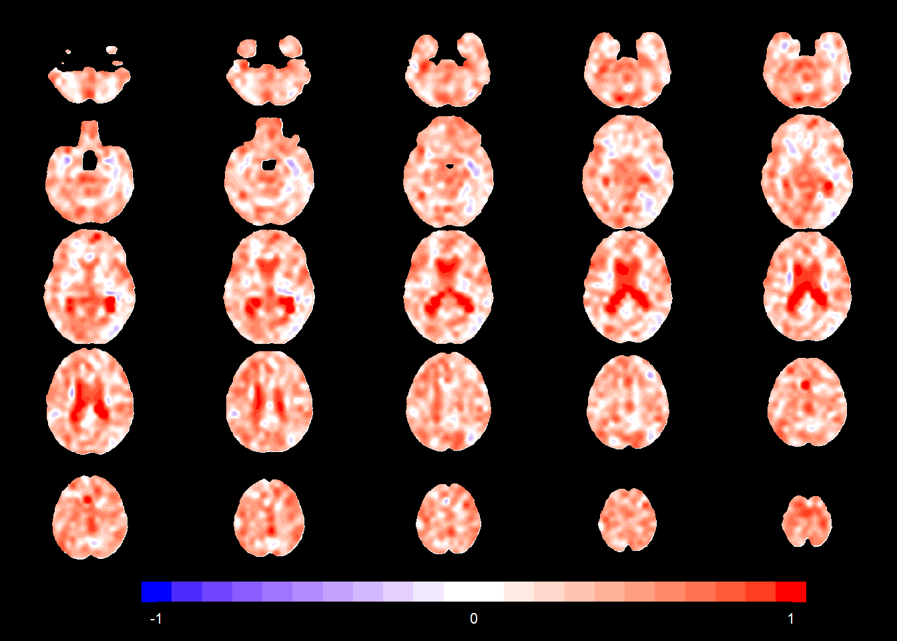
We report here the code to obtain the parameter functions also in the “full” case where all voxels are used (not only the ones in the grid). We do not run the code here as it takes several hours. The computation is run in parallel using the package parabar.
fit2 <- function(col1, data = ADNI_covariates){
{library(dplyr); library(magrittr); library(sn)}
model.matrix(~ AGEminus70*PTGENDER, data = data) %>%
sn.mple(x = .,
y = col1,
opt.method="nlminb", penalty=NULL) %>%
magrittr::extract2("cp")
}
library(parallel)
library(parabar)
n.cores <- detectCores() - 2
print("Start fitskew.")
backend <- start_backend(cores = n.cores, cluster_type = "psock", backend_type = "async")
set_option("progress_track", TRUE)
configure_bar(type = "modern", format = "[:bar] :percent") # format = "> completed :current out of :total tasks [:percent] [:elapsed]")
export(backend, c("tbm_data_FBM_knots", "ADNI_covariates"), environment())
peek(backend)
fitskew_time_FULL <- system.time(
params_gridmat_parabar <- par_apply(backend, tbm_data_FBM_knots[], 2, fit2) %>%
t(.) %>%
data.frame()
)
# fitskew_time_FULL
stop_backend(backend)allgrid_CN_full <- data.frame(allgrid,
mask = as.vector(template_resized)
#,mean = NA,
#SD = NA,
#gamma1 = NA
)
n1 <- ncol(allgrid_CN_full)
allgrid_CN_full[with(allgrid_CN_full, mask>0),n1 + 1:(ncol(params_gridmat_parabar))] <- params_gridmat_parabar
slices_plot(allgrid_CN_full$X.Intercept.CP.[voxel_active], dims = dims_mask, voxels = voxel_active,
mask.under = template_resized>0, alpha = 1, col.threshold = 1000)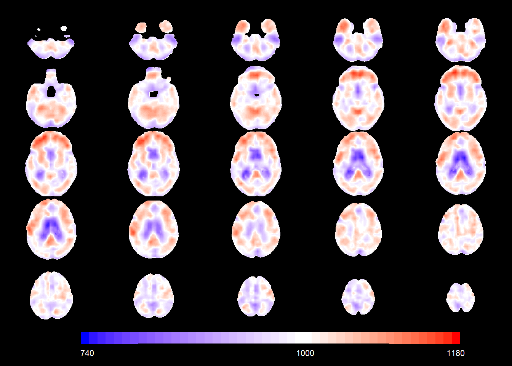
slices_plot(allgrid_CN_full$s.d.[voxel_active], dims = dims_mask, voxels = voxel_active,
mask.under = template_resized>0, alpha = 1, col.threshold = 150)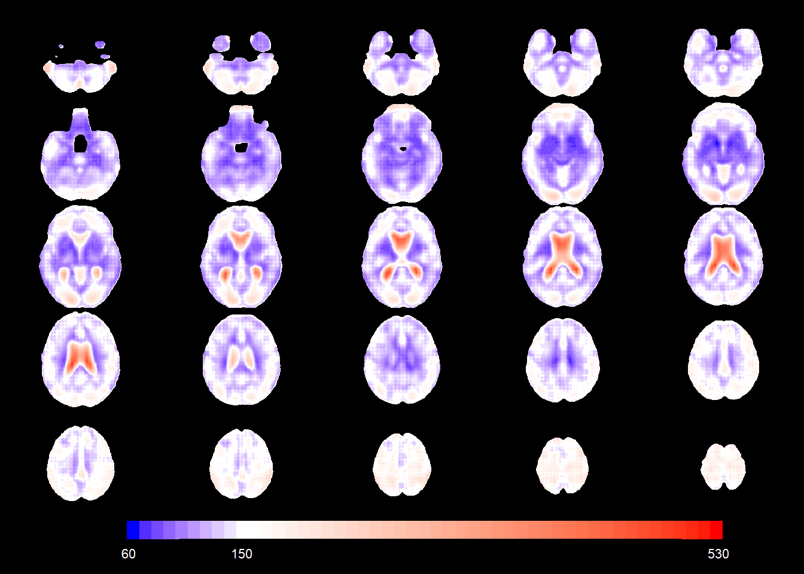
slices_plot(allgrid_CN_full$gamma1[voxel_active], dims = dims_mask, voxels = voxel_active,
mask.under = template_resized>0, alpha = 1, col.threshold = 0,
legend.range = c(-1,1))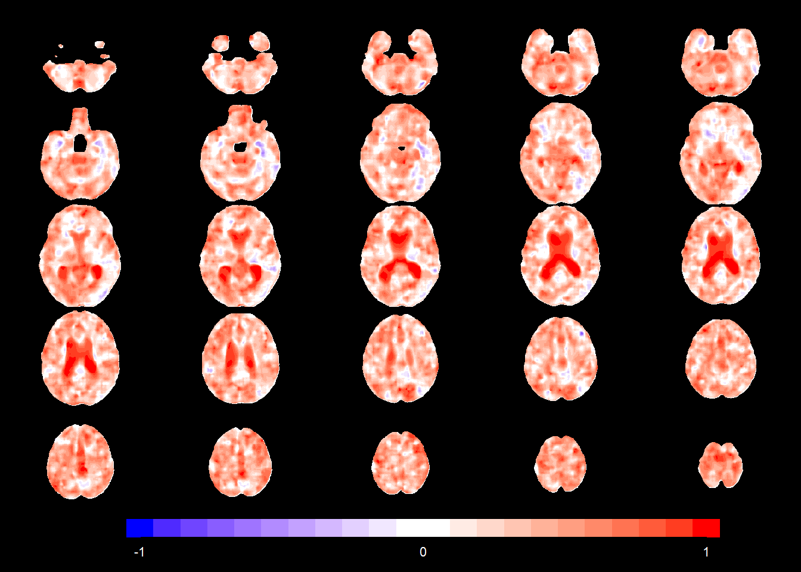
Here we show the differences between the “full fit” parameters and the interpolated ones.
slices_plot(allgrid_CN_full$X.Intercept.CP.[voxel_active] - intercept_coefSN[voxel_active],
dims = dims_mask, voxels = voxel_active,
mask.under = template_resized>0, alpha = 1, col.threshold = 0)
slices_plot(allgrid_CN_full$s.d.[voxel_active] - SD_coefSN[voxel_active],
dims = dims_mask, voxels = voxel_active,
mask.under = template_resized>0, alpha = 1, col.threshold = 0)
slices_plot(allgrid_CN_full$gamma1[voxel_active] - gamma1_radial[voxel_active],
dims = dims_mask, voxels = voxel_active,
mask.under = template_resized>0, alpha = 1, col.threshold = 0,
legend.range = c(-1,1))We can plot the association of the covariates with the mean of the TBM value at each voxel. In particular, we can look at the intercept (that can be interpreted as the mean for the reference category, that is, a 70-year-old female CN subject.
load(here::here("RBF_8mm.RData"))
basis_locs <- data.frame(allgrid_CN) %>%
filter(mask*knots > 0) %>%
dplyr::select(x,y,z) %>%
as.matrix()
ind2<- with(allgrid_CN, which(knots*mask > 0))
intercept_coefSN <- rep(NA, nrow(allgrid_CN))
mod1 <- allgrid_CN %>%
filter(., mask > 0) %>%
with(., which(knots == 1)) %>%
radial_design_mat[., ] %>%
glmnet::glmnet(.,
allgrid_CN$X.Intercept.CP.[ind2],
lambda = 0,
intercept = TRUE)
intercept_coefSN[voxel_active] <- cbind(1, radial_design_mat) %*% coef(mod1) %>%
as.vector()
slices_plot(intercept_coefSN[voxel_active], dims = dims_mask, voxels = voxel_active,
mask.under = template_resized>0, alpha = 1, col.threshold = 1000)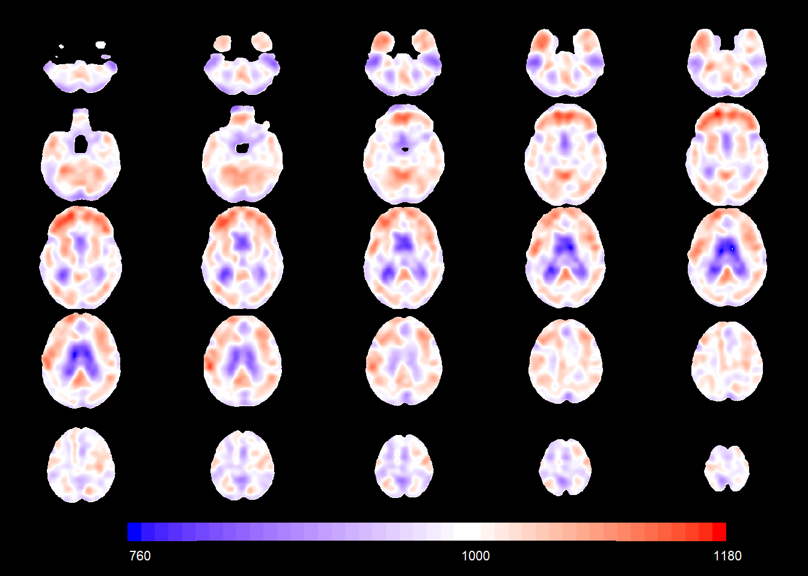
Below is the age main effect in the normative population (i.e. the change in TBM values corresponding to a 1-year age increase for CN females).
age_coefSN <- rep(NA, nrow(allgrid_CN))
mod1 <- allgrid_CN %>%
filter(., mask > 0) %>%
with(., which(knots == 1)) %>%
radial_design_mat[., ] %>%
glmnet::glmnet(.,
allgrid_CN$AGEminus70[ind2],
lambda = 0,
intercept = TRUE)
age_coefSN[voxel_active] <- cbind(1, radial_design_mat) %*% coef(mod1) %>%
as.vector()
slices_plot(age_coefSN[voxel_active], dims = dims_mask, voxels = voxel_active,
mask.under = template_resized>0, alpha = 1)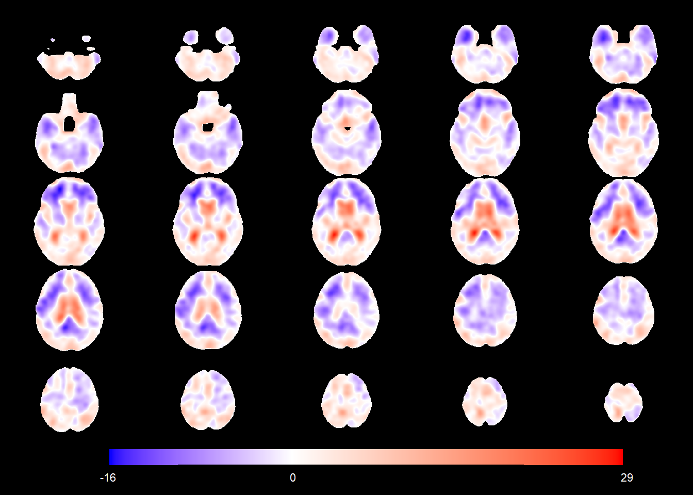
The figure below shows the sex main effect in the normative population (i.e. the average difference in TBM values between CN males and CN females at the same age).
PTGENDERMale_coefSN <- rep(NA, nrow(allgrid_CN))
mod1 <- allgrid_CN %>%
filter(., mask > 0) %>%
with(., which(knots == 1)) %>%
radial_design_mat[., ] %>%
glmnet::glmnet(.,
allgrid_CN$PTGENDERMale[ind2],
lambda = 0,
intercept = TRUE)
PTGENDERMale_coefSN[voxel_active] <- cbind(1, radial_design_mat) %*% coef(mod1) %>%
as.vector()
slices_plot(PTGENDERMale_coefSN[voxel_active], dims = dims_mask, voxels = voxel_active,
mask.under = template_resized>0, alpha = 1)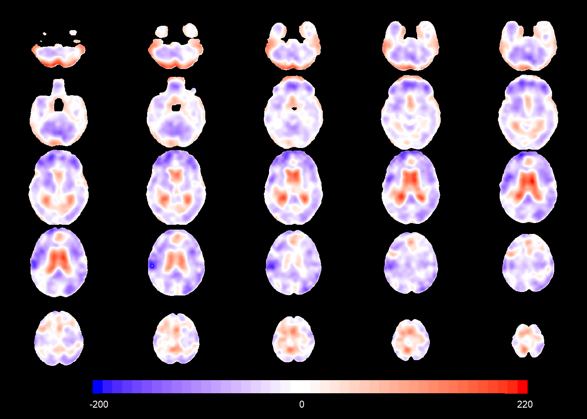
The figure below shows the age-sex interaction in the normative population (i.e. the change in TBM values corresponding to a 1-year age increase for CN males).
interaction_coefSN <- rep(NA, nrow(allgrid_CN))
mod1 <- allgrid_CN %>%
filter(., mask > 0) %>%
with(., which(knots == 1)) %>%
radial_design_mat[., ] %>%
#cbind(basis_locs, .) %>%
glmnet::glmnet(.,
allgrid_CN$AGEminus70.PTGENDERMale[ind2],
lambda = 0,
intercept = TRUE)
interaction_coefSN[voxel_active] <- cbind(1, radial_design_mat) %*% coef(mod1) %>%
as.vector()
slices_plot(interaction_coefSN[voxel_active], dims = dims_mask, voxels = voxel_active,
mask.under = template_resized>0, alpha = 1)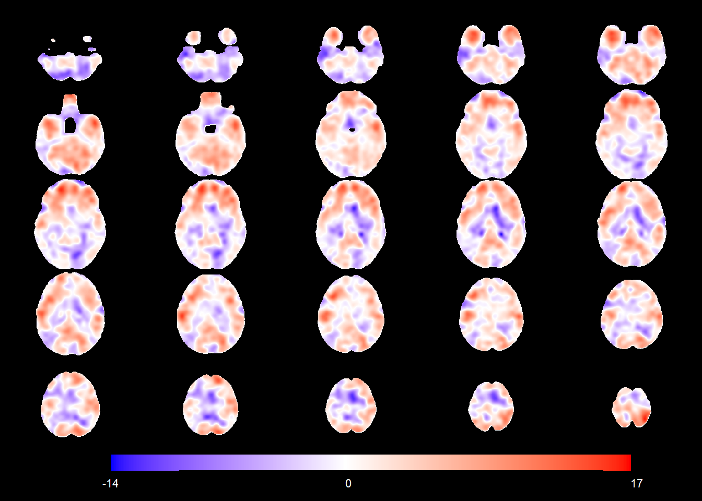
You can now plot the mean for e.g. a 87-year-old female CN subject.
slices_plot(intercept_coefSN[voxel_active] + 17*age_coefSN[voxel_active],
dims = dims_mask, voxels = voxel_active,
mask.under = template_resized>0, alpha.val = 1,
legend.range = c(700,1400),
col.threshold = 1000)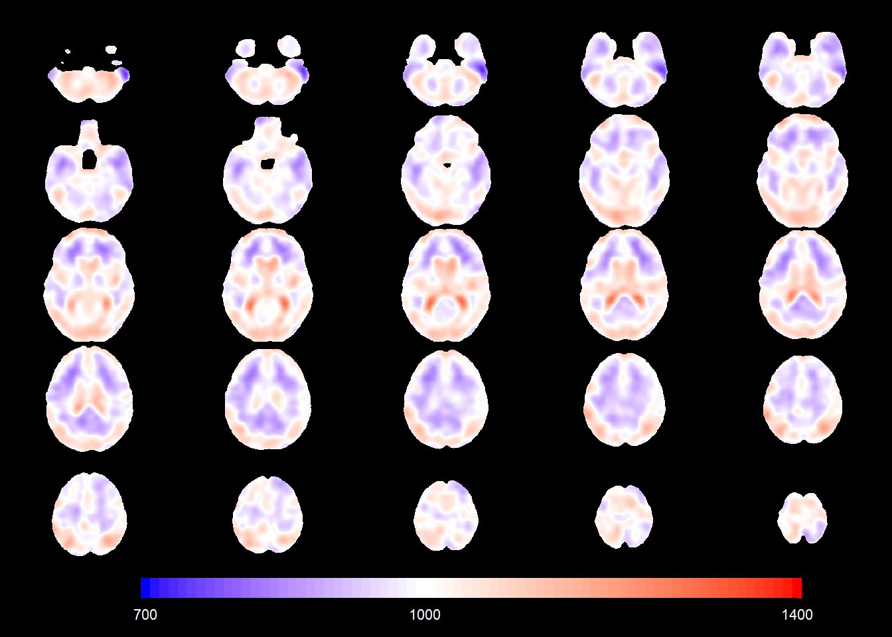
Let us now look at the left-hand side of the workflow.
For each TBM image, we can now compute the z-values on the voxels on the grid and then interpolate on the rest of the images. Then, we can compute indices of abnormality for each image. This can be done for each image (in the training as well as the test set, either cognitively normal or with diseases) with the script produce_zmaps_covariates.R (we recommend to do it on a cluster). Then the indices are joined in a single table.
We compute a lot of indices: the mean of the z-values, their median, their range, their variance etc… You could also take an extreme block (say, the 99.99-th percentile) and compute the mean of that. You would expect larger extremes to be associated with departure from the normative population, possibly linked with some cognitive impairment.
The figures below show boxplots of one specific index of deviation by diagnosis. MCI and AD groups show a higher median with respect to the CN group. The score is also higher for MCI+AD on average across ADAS13 values and in the age range considered.
zmap_stats <- read.table(here::here("zmaps_stats_agesexinter.dat"),
quote="\"", comment.char="",
col.names = c("PTID", "mean_zmap", "median_zmap", "diffrange_zmap",
"var_zmap", "IQR_zmap", "expos_zmap", "exneg_zmap",
"meanposblock_zmap", "meannegblock_zmap",
"meanabsblock_zmap", "norm_zmap"))
zmap_stats <- left_join(zmap_stats, data_ADNI_bl_817, by = "PTID")
ggplot(zmap_stats, aes(x = Dx, y = meanabsblock_zmap, color = Dx)) +
geom_boxplot() +
#geom_violin(draw_quantiles = c(0.25, 0.5, 0.75)) +
theme(legend.position = "none") +
labs(y = expression(u["0.9999"]^{abs}))+
scale_color_manual(name = "Diagnosis", values = c("#009E73", "gold3", "#D55E00")) +
scale_x_discrete(name = "Diagnosis", labels=c("CN","MCI","AD"))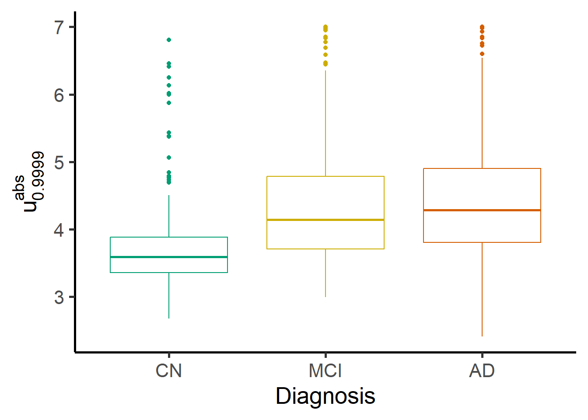
ggplot(data = zmap_stats, aes(y = meanabsblock_zmap, x = ADAS13.bl, color = factor(1*(Dx!="N")))) +
geom_point(alpha = 0.5) +
geom_smooth(lwd = 1.5) +
theme(legend.position = "bottom") +
labs(y = expression(u["0.9999"]^{abs}), x = "ADAS13 at study baseline") +
scale_colour_manual(name = "Diagnosis: ", values = c("#009E73", "coral2"), labels = c("CN", "MCI+AD")) 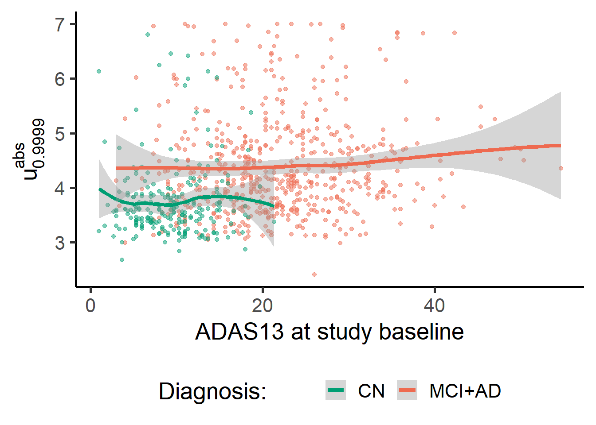
The scores are
zmap_stats %>%
ggplot(data = ., aes(y = meanabsblock_zmap,
x = AGE, color = factor(1*(Dx!="N")))) +
geom_point(alpha = 0.5) +
geom_smooth(lwd = 1.5) +
theme(legend.position = "bottom") +
labs(y = expression(u["0.9999"]^{abs}), x = "Age") +
scale_colour_manual(name = "Diagnosis: ", values = c("#009E73", "coral2"), labels = c("CN", "MCI+AD"))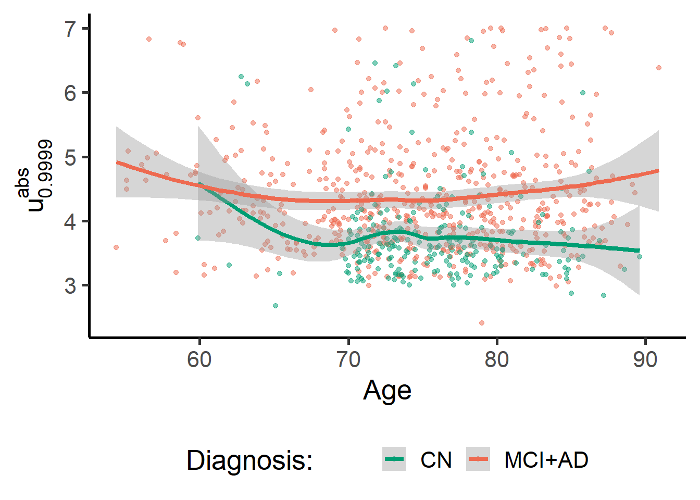
sessionInfo()R version 4.2.2 (2022-10-31 ucrt)
Platform: x86_64-w64-mingw32/x64 (64-bit)
Running under: Windows 10 x64 (build 26100)
Matrix products: default
locale:
[1] LC_COLLATE=English_United Kingdom.utf8
[2] LC_CTYPE=English_United Kingdom.utf8
[3] LC_MONETARY=English_United Kingdom.utf8
[4] LC_NUMERIC=C
[5] LC_TIME=English_United Kingdom.utf8
attached base packages:
[1] stats4 splines stats graphics grDevices utils datasets
[8] methods base
other attached packages:
[1] ADNIMERGE_0.0.1 Hmisc_4.8-0 Formula_1.2-5
[4] survival_3.4-0 lattice_0.20-45 FRK_2.1.5
[7] e1071_1.7-13 sp_1.6-0 sn_2.1.1
[10] ROCR_1.0-11 mgcv_1.9-0 nlme_3.1-160
[13] nortest_1.0-4 neurobase_1.32.3 oro.nifti_0.11.4
[16] glmnet_4.1-6 Matrix_1.5-1 knitrProgressBar_1.1.0
[19] knitr_1.41 sjlabelled_1.2.0 tidyr_1.3.0
[22] dplyr_1.1.4 ggcorrplot_0.1.4 pipeR_0.6.1.3
[25] fda_6.1.4 deSolve_1.35 fds_1.8
[28] RCurl_1.98-1.12 rainbow_3.7 pcaPP_2.0-3
[31] MASS_7.3-58.1 magrittr_2.0.3 ggplot2_3.5.1
[34] bigstatsr_1.5.12 bigmemory_4.6.1 pacman_0.5.1
loaded via a namespace (and not attached):
[1] readxl_1.4.1 uuid_1.1-0 backports_1.4.1
[4] spam_2.9-1 plyr_1.8.8 TMB_1.9.4
[7] RNifti_1.5.0 digest_0.6.31 foreach_1.5.2
[10] htmltools_0.5.4 fansi_1.0.3 checkmate_2.1.0
[13] cluster_2.1.4 doParallel_1.0.17 ks_1.14.0
[16] bigassertr_0.1.6 hdrcde_3.4 matrixStats_0.63.0
[19] R.utils_2.12.2 xts_0.13.1 jpeg_0.1-10
[22] colorspace_2.0-3 xfun_0.38 jsonlite_1.8.4
[25] bigmemory.sri_0.1.6 flock_0.7 zoo_1.8-12
[28] iterators_1.0.14 glue_1.6.2 gtable_0.3.1
[31] MatrixModels_0.5-1 car_3.1-2 shape_1.4.6
[34] maps_3.4.2 SparseM_1.81 abind_1.4-5
[37] scales_1.3.0 mvtnorm_1.1-3 bigparallelr_0.3.2
[40] rstatix_0.7.2 Rcpp_1.0.11 viridisLite_0.4.1
[43] htmlTable_2.4.1 bit_4.0.5 foreign_0.8-83
[46] proxy_0.4-27 mclust_6.0.0 dotCall64_1.0-2
[49] intervals_0.15.3 htmlwidgets_1.6.1 DiagrammeR_1.0.10
[52] RColorBrewer_1.1-3 ellipsis_0.3.2 ff_4.0.9
[55] pkgconfig_2.0.3 R.methodsS3_1.8.2 farver_2.1.1
[58] nnet_7.3-18 deldir_1.0-6 utf8_1.2.2
[61] here_1.0.1 tidyselect_1.2.0 labeling_0.4.2
[64] rlang_1.1.1 reshape2_1.4.4 munsell_0.5.0
[67] cellranger_1.1.0 tools_4.2.2 visNetwork_2.1.2
[70] cli_3.6.0 generics_0.1.3 broom_1.0.2
[73] evaluate_0.20 stringr_1.5.0 fastmap_1.1.0
[76] yaml_2.3.6 purrr_1.0.1 quantreg_5.95
[79] R.oo_1.25.0 pracma_2.4.2 compiler_4.2.2
[82] rstudioapi_0.14 png_0.1-8 ggsignif_0.6.4
[85] spacetime_1.3-0 tibble_3.2.1 statmod_1.5.0
[88] stringi_1.7.12 ps_1.7.2 highr_0.10
[91] fields_16.2 vctrs_0.6.5 pillar_1.9.0
[94] lifecycle_1.0.3 data.table_1.14.6 cowplot_1.1.1
[97] bitops_1.0-7 insight_0.19.2 R6_2.5.1
[100] latticeExtra_0.6-30 KernSmooth_2.23-20 gridExtra_2.3
[103] codetools_0.2-18 rprojroot_2.0.3 withr_2.5.0
[106] mnormt_2.1.1 parallel_4.2.2 grid_4.2.2
[109] rpart_4.1.19 class_7.3-20 rmio_0.4.0
[112] rmarkdown_2.19 carData_3.0-5 sparseinv_0.1.3
[115] ggpubr_0.6.0 numDeriv_2016.8-1.1 base64enc_0.1-3
[118] interp_1.1-3